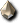
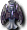

關於赫爾西昂地下城
- 可從萊比亞的NPC「普艾爾」(20,115)入場
- 要進入赫爾西昂,必須只由91以上且已決定善惡的角色組成尤尼恩。即使已決定善惡,若轉職過,轉職後沒有達到91以上也無法進入。
- 各迴廊的鑰匙如果不使用,該地圖會持續一段時間接受其他隊伍,所以請務必使用
※鑰匙從死亡之魂掉落,所謂使用是指在出口使用那把鑰匙
如果有死亡之魂就打倒並取得鑰匙,點擊出口的門消耗那把鑰匙後突入核心,要回去的話
要先進入核心後再飛走。否則別的隊伍會進入死亡之魂已被打倒的地圖
的情況
※目前的規格雖然隊伍之間不會重複,但可能會被分配到沒有死亡之魂的地圖
的情況,所以為了保險起見,最好還是消耗鑰匙(死亡之魂的重生旗標
可能和突入核心有關)。 - 從核心要飛往迴廊或女王之間的哪邊,可以從核心4根柱子上方物件的亮燈狀況
得知。如果4個物件全部亮燈,下次會被送往女王之間,請注意。 - 只有星期日可以入場。(星期日0時～24時之間可以進入任意次數)
- 偶爾會發生任務超時或伺服器當機等情況,被強制送回故鄉城鎮的
情況。如果在赫爾西昂內開著守護動物,守護動物會被遺留在赫爾西昂地下城,
所以被送回後請務必重新登入。最糟的情況守護動物會死2次。(2011.6 已改善) - 在迴廊等處前往下一個地點之前,請務必確認隊伍成員有沒有人死亡。
如果放著有人變成墓碑不管,墓碑的人會被強制遣返故鄉。
最糟的情況,墓碑的人會掉落裝備而無法回收的案例也有(因為進入後飛往的地圖
是隨機的)。聖職者建議使用天使之羽或天使之翼。背包建議空出4格。
※目前的規格雖然不會再掉落裝備,但仍須充分留意墓碑。
尤尼恩的組法
- 以單一群組組成尤尼恩的方法
1.照常組成群組
↓
2.群組隊長點擊隊伍視窗左肩的 U 圖示
↓
3.畫面中央會出現視窗,從視窗左側選擇「赫爾西昂地下城」,右側選擇想開始的
階段(前往赫爾西昂艾梅斯地圖選階段0,前往各迴廊入口選階段2)。
↓
4.點擊該視窗右下的組成尤尼恩 - 以多個群組組成尤尼恩的方法
1.想當尤尼恩1的群組隊長依上述要領組成尤尼恩
↓
2.想當其他尤尼恩的群組隊長各自招募群組成員,只組成群組
（不必組成尤尼恩）
↓
3.想當尤尼恩1的群組隊長點擊想當其他尤尼恩的群組隊長,
平常組成群組時點擊的地方變成了 U ,點擊它
↓
4.被點擊的群組隊長會出現視窗,在選項中按OK
※注意事項
・以階段2組成時,沒進過迴廊的角色無法招募。
・從階段0開始,只要全員進過一次迴廊,就不必重組,可以從階段2入場。
・以多個群組組成尤尼恩時,每個群組各自都需要記憶之書(群組)。
・部分後衛的輔助只對群組內有效,所以要注意分配負責人。
破壞魔鏡艾尼西恩
和萊比亞的NPC「梅奇赫」(42.18)說話即可開始任務。
- 打倒赫爾西昂最深處的魔鏡艾尼西恩即通關。
- 概略
- 第一張地圖 狩獵雜魚會出現鑰匙,把它交給尤尼恩隊長後前往下一張地圖。
- 第二張地圖 殲滅雜魚後可前往下一張地圖。
- 第三張地圖 每個群組會被送往迴廊,打倒迴廊的BOSS,取得鑰匙。
迴廊有4個,用鑰匙打開全部4個迴廊出口的門後來到大廳,就能前往下一張地圖。
※以多個群組組成尤尼恩時,合計通過4種迴廊即可。 - 最終地圖 有「魔鏡艾尼西恩」、「冰結的艾尼斯特米」、「芬里爾的虛像」。
打倒魔鏡艾尼西恩即通關。不過進入最終地圖後2小時會被送回故鄉,請注意。
魔鏡艾尼西恩會無限召喚雜魚,請注意。
魔鏡艾尼西恩召喚的怪物會依以下條件改變出現種類。
HP在100%～70%時召喚赫爾西昂艾梅斯、赫爾西昂赫爾阿丘克。
HP在69%～20%時召喚冰凍之魂。
HP低於19%時召喚死亡之魂、冰凍之魂。(剩餘1350萬)
破壞魔鏡艾尼西恩後,和出現的NPC說話可獲得「凍結的淚」。
再把它交給梅奇赫,僅限第一次可獲得以下報酬品。
另外,破壞後在沒有組隊或不是隊長的狀態下和普艾爾說話,每天一次(每24小時一次,不是以日期重置)會讓HP上限各提高150,持續2小時。俗稱普艾爾輔助、普艾爾加護
- 任務報酬品
- 稱號…阿斯特雷德追逐者
- 報酬道具
前衛
♂…迪捷雷德艾摩斯
♀…迪捷雷德艾迪絲
後衛
♂…迪捷雷德迪達克
♀…迪捷雷德迪克斯
- 攻略法
關於赫爾西昂的討伐方法,有網站詳細解說,所以這裡從簡。
另外,方法應該會因伺服器或隊伍而千差萬別,僅供參考。
大致分為守護牆的形成・芬里爾的虛像的隔離・擊破艾尼西恩與艾尼斯特米3點。- 守護牆的形成
為了保護後衛免受艾尼西恩出現的怪物攻擊,排好陣型用守護動物形成牆壁。
這需要在移動到BOSS地圖後盡可能迅速地進行。
花越多時間怪物越多越危險,所以希望事先讓隊伍成員熟悉陣型。  芬里爾的虛像(俗稱：狗)的隔離
芬里爾的虛像(俗稱：狗)的隔離
事先決定好2人左右的負責人,入場後與形成守護牆同時進行。
負責人要最先攻擊芬里爾的虛像吸引仇恨,
把它從陣型拉開,利用地圖邊緣的障礙物和守護動物封鎖、隔離。
因為會增加誘導難度,魔術師・吟遊詩人・預言者絕對不可對芬里爾的虛像施放減速。
雖然要離開隊伍獨自行動,但芬里爾的虛像攻擊力很高,
拉開時預期會和艾尼西恩出現的雜魚怪物交戰,
再加上要在離開守護的地點用來封鎖,所以討伐期間無法依賴守護動物。
基於這些點,最好由耐久力優秀的前衛角色負責。(修道士・戰士等)
※封鎖用的守護動物不一定要是負責誘導的角色的,也可以使用不參加攻擊的
聖職者或吟遊詩人的守護動物。提供的聖職者或吟遊詩人
跟著釣怪的人,把狗誘導到要封鎖的地點後,在狗前面放置守護動物,如果是吟遊詩人,
會在釣怪的人回到陣中後,為了不被鎖定而轉身全速逃跑。
芬里爾的虛像會進行讓對象角色被強制冰凍約20秒的攻擊,
所以一個人隔離相當嚴苛,務必多人一起互相管理HP和守護的MP來進行。
隔離成功後與隊伍會合,加入擊破艾尼西恩與艾尼斯特米。- 艾尼西恩與艾尼斯特米的擊破
如果守護牆的形成和芬里爾的虛像的隔離順利結束,接下來就只剩擊破。
出現的雜魚怪物由托克辛和魔術師擊破,前衛擊破艾尼西恩與艾尼斯特米。
赫爾西昂的BOSS怪物各有9格可攻擊的位置,
與其把攻擊分散到多格,不如決定好攻擊對象1格並集中攻擊更有效率。
據報告,攻擊多格反而會增加所需時間。
因此持有範圍技能的前衛或利貝聖等人需要調整站位和使用技能,
要求不要攻擊到攻擊對象1格以外的格子。
詛咒防禦・胡椒炸彈・支援者等傷害增強輔助非常重要,
請留意有無的差異會導致所需時間大幅縮短或增加。
需要掌握效果時間,不間斷地持續施放在攻擊對象格上。
關於減速系技能,似乎對中心格施放可以延遲攻擊、自然恢復。
如果攻擊對象格的正下方格及正上方格有變身狀態或穿安塔岡裝備的角色,
游標會對不準而難以對對象格輔助,所以不要把角色配置在那些位置。
艾尼西恩的HP減少後出現的怪物種類會改變,遠距離攻擊變激烈。
要吸收全部仇恨的魔術師需要穿增強HP/MC的裝備才能承受。
魔術師縱向排成一列的陣型時,對魔術師的回復以聖職者的神聖活力、吟遊詩人的
增進生命有效。另外,建議魔術師關閉特效(自己的守護位置和
弱化格會比較容易看見)。
另外徹底對魔術師施放B克列・增進、對怪物施放減速也很重要。
而且最重要的是不花時間迅速擊破艾尼西恩,這也是最安全的對策。
因此前衛最好盡可能重視火力,例如天上變身或重視能力值的裝備,
後衛和盜賊比其他狩獵場更需要注意維持輔助技能。
也有一部分不發射DPH的討伐,由迴避高的盜賊(DEX180左右)接雜魚的仇恨,
以求隊伍整體穩定的方針的討伐。
- 守護牆的形成
- 擬定作戰時的問題點
- 到女王之間為止
需要周知掉線時的集合地點、確認DS以及撿到鑰匙後怎麼處理的應對、在核心等處的
陣型確認等作戰內容。 - 剛進入女王之間時
進入後到建好守護牆之前,台座上被雜魚擠滿的狀況下,(主要是後衛)該如何站位
行動,對經驗少的人來說也有令人困惑之處。熟悉的人在不妨礙後衛的位置
先配置守護,前衛把雜魚誘導到鏡子那一側,優先為沿著守護牆就位的後衛築牆等,守護
放置的位置如何排除敵人,以及後衛如何順利就定位都需要考慮。 - 雜魚的處理
依陣型・處理狀況,雜魚也可能溢向後衛側。特別是從魔的角度來看,因為自己
吸收仇恨,也會被溢出的敵人鎖定,忙於自保而無暇輔助的情況。
不過,雜魚終究是次要的,不一定要100%打倒。
※該打倒的是女王和鏡子
依陣型不同…也許把雜魚從台座一直放著不管也能成立。 - 伺服器斷線
不管多重視不要掉線,還是會有人掉線。
一掉線守護牆會出現破洞,魔就那樣變成墓碑的可能性很大,聖忙於復活而回復
跟不上→無法收拾,以這種模式失敗的案例也很多。
需要事先考慮有人掉線時的對策。
不僅限於神秘支援守護,利用可成為牆壁的一般守護也是必要的。
出現破洞時,請魔停止DPH,
由鏡子側的前衛暫時吸引破洞周邊敵人的仇恨並誘導,
堵住破洞等應對也是必要的。
※赫爾西昂視為活動地圖,所以無法使用寵物・熾烈之塔 - 對女王・狗的分裂的應對等
- 是否使用強力打擊
選擇強力打擊+詛咒城堡/詛咒施放者/詛咒創世,還是單獨使用詛咒防禦。
不過用神聖光束射擊女王・鏡子時只能選後者
（因為詛咒保護會無法重疊）。另外選前者時,除了詛咒創世以外
都是天上魔法,所以要指示魔術師多帶寶石,或是需要有能使用神聖勇氣治癒/治癒區域的
吟遊詩人隨行。
- 到女王之間為止
- 禁忌魔法
 祝福生命、
祝福生命、 阿尼瑪特力量鼓、
阿尼瑪特力量鼓、 尼特拉斯治癒
尼特拉斯治癒
這些在自動恢復的時機變成墓碑的話,有HP維持在1的狀態
而無法復活的Bug。在這張地圖重新登入會被送回故鄉
強制送回,所以最好避免。- 對前衛施放高速詠唱
對於使用現身或精神動作的角色
因為氣力恢復會變慢,除非特別要求否則請避免。  神聖視野
神聖視野
因為特效很重,電腦或網路規格較弱的人更容易掉線- 2個群組以上前往時使用群組恢復
1個群組13人以下前往時尤尼恩=群組,所以沒有問題,
但若以2個群組以上組成尤尼恩,
群組成員以外的人無法被回復範圍涵蓋。前衛只要依群組分別分擔女王・鏡子即可,
但後衛多半聚在一處的陣型,依後衛人數會變得沒有效率
支線任務
可從萊比亞的NPC「庫魯諾」(28.121)接任務。
- 溫迪哥們的動搖
打倒50隻[赫爾西昂艾梅斯]→ 第50隻時視窗開啟並獲得名聲25萬
※只計算綠色的不死系 - 排除妨礙者
打倒100隻冰凍之魂→第100隻時視窗開啟並獲得名聲35萬
※只計算出現在迴廊・大廳的
※從艾尼西梅塔里安的鏡子湧出的冰凍之魂不算 - 邁向最終階段
在4個迴廊中各打倒1隻所有死亡之魂,共4隻→第4隻時視窗開啟並獲得名聲24萬
任務依上面順序進行。
死亡之魂討伐任務完成後和「庫魯諾」說話,可獲得褒賞品「赫爾西昂之箱」。
※開封需要背包空出2格
雙擊它後…
 迪捷雷德戒指A
迪捷雷德戒指A
迪捷雷德戒指M
迪捷雷德艾摩斯
 獵人輕手套
獵人輕手套
 重型防禦鞋
重型防禦鞋
 重型防禦長靴
重型防禦長靴
 重型防禦奈爾
重型防禦奈爾
 鐵手套
鐵手套
 體力捲軸
體力捲軸
魔力捲軸
氣力捲軸
技術捲軸
破邪捲軸
閃避捲軸
避魔捲軸
甲殼捲軸
破魔捲軸
戴姆腰帶[2]
吉戈腰帶[2]
凱隆腰帶[2]
格蘭腰帶[2]
10個全效藥水
等會隨機獲得。
另外最後的4隻死亡之魂任務可以重複進行很多次。
・備註：支線任務的進度和能否前往大廳或迴廊是兩回事
即使沒有打倒50隻[赫爾西昂艾梅斯],只要撿到鑰匙進入下一個大廳,下次起
就能進入大廳
如果在轉職前進過迴廊,轉職後也可以參加從階段2開始的隊伍
順帶一提,階段0是有[赫爾西昂艾梅斯]的樓層,階段1是大廳,階段2是
迴廊
赫爾西昂的敵人對混亂無效。
靠近迴廊的神聖水晶(像冰塊的東西)會非常痛
在迴廊不要讓守護靠近神聖水晶和死亡之魂
※靠近神聖水晶的話守護不會回復。靠近死亡之魂的話
會妨礙前衛攻擊死亡之魂(靠近的守護有幾個,
能攻擊的前衛人數就減少幾人)。
深淵亞德禮紛聖域→深淵亞德禮紛大廳要在隊長持有鑰匙的狀態下
和NPC說話,深淵亞德禮紛大廳→迴廊要將深淵亞德禮紛大廳內的
怪物全滅後由隊長和NPC說話(以階段2組隊的話不用打倒,
只要說話就OK,無法選擇迴廊),迴廊→深淵亞德禮紛核心要由持有鑰匙
的人點擊門,深淵亞德禮紛核心→迴廊要由隊長和NPC說話,
選擇「去見艾尼斯特米」→選擇想去的迴廊,即可這樣移動。
赫爾西昂地圖出現怪物
赫爾西昂地圖出現怪物
關於赫爾西昂裝備製造及升級
任務「破壞魔鏡艾尼西恩」通關後,
和萊比亞的NPC「梅奇赫」(42.18)說話即可進行裝備品的製造及升級。
※也就是說沒有通關的角色無法製造及升級,請注意。
- 裝備品製造
在持有赫爾西昂內掉落的各種古書以及墮天使之淚或懺悔天使之淚、Glod的狀態下,可製造武器、服裝、 手套、鞋子4種。
手套、鞋子4種。
武器和服裝製造自己職業的,鞋子和手套可以選擇。
| 武器 |  墮天使之淚、 憤怒的古書、3500萬Glod 憤怒的古書、3500萬Glod |
| 服裝 |  懺悔天使之淚、復仇的古書、3000萬Glod 懺悔天使之淚、復仇的古書、3000萬Glod |
 鞋子 鞋子 | 懺悔天使之淚、偏見的古書、1500萬Glod |
| 手套 | 墮天使之淚、破滅的古書、1200萬Glod |
 升級
升級
在持有赫爾西昂內掉落的特定道具和製造出或掉落的冠有「迪捷雷德」
之名的裝備品的狀態下可以升級。
武器、服裝、手套、鞋子、戒指、耳環、追加武器(天使的起源)共7種可升級。
帽子無法升級。
※武器的升級必須是能裝備該武器的職業才能進行。5/16現在
※服裝的升級必須是與升級的服裝同性別的角色才能進行。(♀角色不能升級♂服裝)
| 武器 | 要升級的武器、鋼鐵鑄塊×5、黃玉×3、石灰石×5、500萬Glod | |
| 服裝 | 要升級的服裝、鋼鐵鑄塊×3、黃玉×5、石灰石×5、500萬Glod | |
| 手套 | 要升級的手套、鋼鐵鑄塊×2、黃玉×3、石灰石×3、300萬Glod | |
| 鞋子 | 要升級的鞋子、鋼鐵鑄塊×2、黃玉×3、石灰石×3、300萬Glod | |
| 飾品 | 戒指 | 要升級的戒指、野薔薇×3、楮木柴×2、石灰石×2、200萬Glod |
| 耳環 | 要升級的耳環、野薔薇×2、楮木柴×3、石灰石×3、300萬Glod | |
| 憤怒天使的加護 |  天使的起源、憤怒的古書、100萬Glod 天使的起源、憤怒的古書、100萬Glod | |
 墮落天使的加護 | 天使的起源、復仇的古書、100萬Glod | |
| 悔改天使的加護 | 天使的起源、靈魂的古書、100萬Glod |
製造不會失敗,但升級存在成功機率,
失敗的話裝備品、材料都會消失。
關於成功率眾說紛紜,3～4成左右的意見比較有力。
另外升級會變成別的道具,所以原裝備的附魔等附魔效果會消失。
如果持有多件同類別裝備品(例：鞋子和奈爾)進行升級,
可能會升級到不想升級的那件裝備品,請注意。
優先順序不明。
參考：赫爾西昂升級表
關於解讀
任務「破壞魔鏡艾尼西恩」通關後,
和萊比亞的NPC「梅奇赫」(42.18)說話即可解讀文獻/記錄。
會出現的東西
| 古代的文獻的解讀 | 古代的記錄的解讀 |
| [古書]AAR 附魔[古書]SAR 附魔[古書]STR 附魔[古書]CON 附魔[古書]INT 附魔[古書]WIS 附魔[古書]DEX 附魔 | 憤怒的古書、偏見的古書、復仇的古書、破滅的古書、靈魂的古書 |
留言欄（不擅長編輯Wiki的人請在此留言）
目前顯示最新的10件。請參閱留言頁面
- 最快50分鐘就打倒BOSS了 -- zako? 2008-08-01 (五) 15:28:36
- 女王似乎稍微被弱化了。 -- 2008-08-23 (六) 20:45:44
- 赫爾西昂製造需要的古書,哪個可以做出哪個呢？ -- 2008-09-25 (四) 23:33:06
- 聽說服裝在用善・惡製作時外觀會不同,是真的嗎？ -- 2008-10-27 (一) 14:00:04
- 女王・鏡子都集中攻擊1處的話,即使1個隊伍也能在1小時左右討伐。 -- 2009-11-07 (六) 09:30:45
- 鑄塊、黃玉和極限用的是同樣的東西嗎？ -- 2009-11-08 (日) 22:32:25
- ↑記得是不同的 -- 2009-11-13 (五) 19:10:40
- ↑↑是一樣的 -- 2009-12-22 (二) 08:35:12
- ↑有人說不行。畢竟說明文就不同了… ×異次元產 ○活動點數產 -- h? 2010-05-03 (一) 00:57:04
- 最近9人隊伍最快25分鐘左右吧。 -- 2010-10-21 (四) 09:24:29
- &#